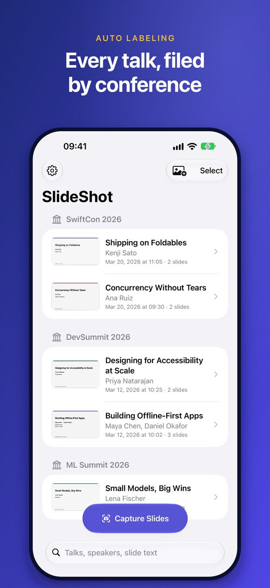
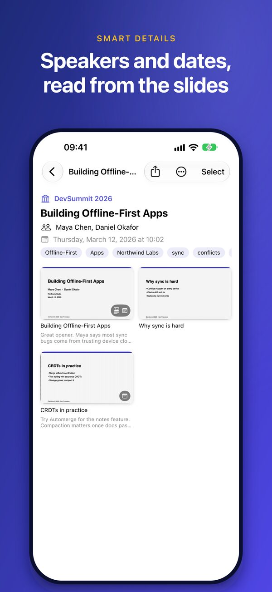
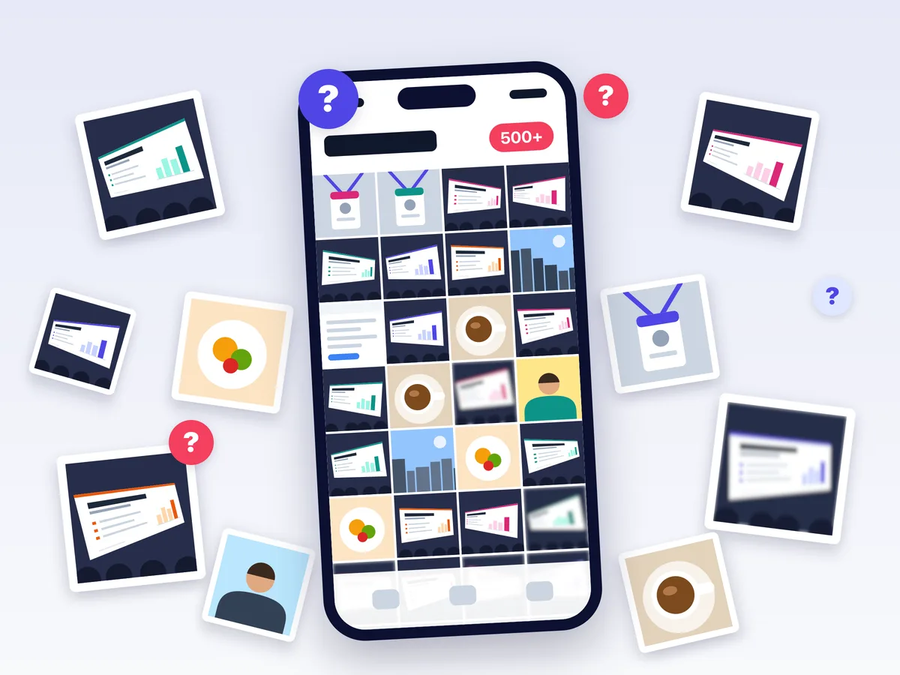

你也遇過這些嗎？
-

角度問題
坐在側邊？拍出來的投影片總是歪的。
SlideShot 會找到投影片，依真實形狀把它拉正，就像拿到了原始簡報檔。
-

相簿問題
拍了 500 張照片後，哪張投影片屬於哪場演講？
SlideShot 會讀取每張投影片，並依演講、講者和會議歸檔。
-

記憶問題
一週後，那場演講講了什麼？
SlideShot 把每張投影片的文字和你的備註放在一起，全部都能搜尋。
-

分享問題
分享一場演講，不該是傳 40 張照片。
SlideShot 可以把整場演講分享為一張長圖或一個 PDF。
SlideShot 能做什麼
-
拍攝
自動拍下每張投影片
將 iPhone 對準投影幕或螢幕。SlideShot 會找到投影片，等畫面穩定後拍攝，並略過已拍過的投影片。
-
拉正
不論坐在哪裡，都平整端正
透視校正會還原每張投影片的真實形狀，即使坐在側邊也沒問題；有望遠鏡頭的 iPhone 會在自動縮放時使用望遠鏡頭。
-
自動標註
依演講和會議歸檔
SlideShot 會讀取每張投影片，為每場演講標註標題、講者、會議和日期，再將演講依會議分組，不必手動輸入。
-
備註與搜尋
隨時找到任何一張投影片
為任何投影片加入簡短備註，然後在標題、講者、投影片文字和備註中搜尋。
-
分享
整場演講，一張長圖
將演講分享為一張手機寬度的長圖，可選擇是否包含備註，也可以輸出為 PDF。
-
隱私
只保存在你的 iPhone 上
不需要帳號，沒有伺服器，不追蹤。SlideShot 不蒐集任何資料，你的投影片和備註只保存在你的裝置上。
需要 iOS 26 或以上版本。